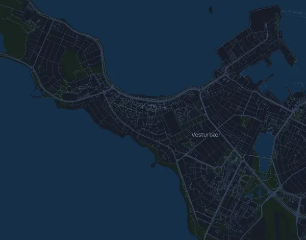

Íslandsbanki Reykjavík Marathon – 10 km
- Matka
- 10 km
- Nousumetrit
- ↑ 52 m
- Korkein kohta
- 81 m mpy
- Alusta
- Maantie
- Luonne
- Tasainen
Korkeusprofiili
Valmistaudu Milan kanssa
Mila on juoksuvalmentaja sovelluksessa. Kun lisäät kisan suunnitelmaasi, valmentaja suunnittelee viikot starttiin asti kuntosi mukaan ja antaa sinulle loppuaikaennusteen sekä suunnitelman vauhdista, juomisesta ja energiasta reitillä.

Oikea harjoitus. Oikea päivä.
Reitti

Tietoa reitistä
Íslandsbanki Reykjavík Marathon – 10 km on 10 km:n maantiejuoksu (Reykjavík, Islanti). Reitillä on nousua 52 m ja laskua 51 m, 5,2 m/km, joten reitti on tasainen. Korkein kohta on 81 m ja matalin 69 m merenpinnan yläpuolella.
Reitillä ei ole yhtenäisiä vähintään 25 nousumetrin nousuja.
Mila-sovelluksessa valmentaja kuvailee reitin tarkasti omalla kielelläsi ja suunnittelee vauhtisi ja energiasi sille.
Vauhtitaulukko
Íslandsbanki Reykjavík Marathon – 10 km ajassa 40:00 – vauhti kilometrillä ja väliajat
4:00 min/km · km 2,5: 10:00 · km 5: 20:00 · km 7,5: 30:00 · maali: 40:00
Íslandsbanki Reykjavík Marathon – 10 km ajassa 50:00 – vauhti kilometrillä ja väliajat
5:00 min/km · km 2,5: 12:30 · km 5: 25:00 · km 7,5: 37:30 · maali: 50:00
Íslandsbanki Reykjavík Marathon – 10 km ajassa 1:00:00 – vauhti kilometrillä ja väliajat
6:00 min/km · km 2,5: 15:00 · km 5: 30:00 · km 7,5: 45:00 · maali: 1:00:00
Íslandsbanki Reykjavík Marathon – 10 km ajassa 1:10:00 – vauhti kilometrillä ja väliajat
7:00 min/km · km 2,5: 17:30 · km 5: 35:00 · km 7,5: 52:30 · maali: 1:10:00
Ajat olettavat tasaisen vauhdin koko matkan. Tämä on pelkkää laskentaa, ei ennuste: mäissä, ruuhkassa ja juomapisteillä vauhti vaihtelee.
Usein kysyttyä
Íslandsbanki Reykjavík Marathon – 10 km: milloin kisa juostaan?
Seuraavan kisan päivä ei ole vielä selvillä. Viimeksi kisa juostiin 22. elokuuta 2026.
Íslandsbanki Reykjavík Marathon – 10 km: kuinka pitkä matka on ja paljonko nousua on?
Matka on 10 km, nousua 52 m ja laskua 51 m. Korkein kohta on 81 m mpy.
Íslandsbanki Reykjavík Marathon – 10 km: millainen reitti on?
Reitti on tasainen, nousua keskimäärin 5,2 m kilometrillä. Reitillä ei ole yhtenäisiä vähintään 25 nousumetrin nousuja. Reitti kulkee lähdöstä maaliin, joka on eri paikassa. Alusta on maantietä.
Íslandsbanki Reykjavík Marathon – 10 km: miten jaan vauhtini?
Pyri tasaiseen rasitukseen koko matkan, ja jarruttele ensimmäisillä kilometreillä, kun jalat tuntuvat kevyiltä ja muut karkaavat edelle. Reitti on tasainen, joten tasainen vauhti kilometriä kohden toimii hyvin. Milasta saat juuri tälle reitille vauhtisuunnitelman oman kuntosi mukaan.
Lisää samanlaisia kisoja
Lisää kisoja lähellä
- Iceland Volcano Marathon – Full Marathon 42,2 km3. heinäkuuta 2027 · Mývatn, Islanti
- Laugavegur Ultra Marathon 52,4 km17. heinäkuuta 2027 · Landmannalaugar, Islanti
- Íslandsbanki Reykjavík Marathon – 42,2 km (Marathon)Päivä ei selvillä · Reykjavík, Islanti
- Íslandsbanki Reykjavík Marathon – Half marathon 21.1KPäivä ei selvillä · Reykjavík, Islanti
Valmistaudu Milan kanssa
Oikea harjoitus. Oikea päivä.
Tiedot ovat reittitiedostosta ja järjestäjän tiedoista. Tarkista päivä, lähtöajat ja säännöt järjestäjältä.
Mila ei ole yhteydessä järjestäjään eikä kisan sponsoreihin, eivätkä ne sponsoroi tai suosittele Milaa. Nimet ja tavaramerkit kuuluvat omistajilleen. Järjestäjä tai oikeuksien haltija? Pyydä muutosta tai poistoa